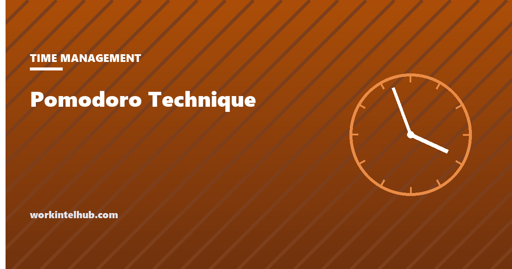

Pomodoro Technique

The Pomodoro technique is a time management method in which work is done in fixed intervals, traditionally 25 minutes, separated by short breaks, with a longer break after every four intervals. Each interval is a pomodoro, Italian for tomato, after the kitchen timer Francesco Cirillo used when he devised the method as a student in the late 1980s.
There is a timer below. The rest of the page is about the parts most guides leave out: the rules that make it more than a countdown, the evidence for changing the intervals, and the work it actively harms.
Pomodoro timer
Four focus intervals make a cycle; the fourth is followed by the long break. The count-down continues in the tab title so you can work in another window. Completed pomodoros today: 0.
The rules, not just the timer
- Choose one task. A pomodoro is 25 minutes on one thing, not 25 minutes of being busy.
- Set the timer and work until it rings. If something else comes to mind, write it down and continue. The interruption is deferred, not answered.
- A pomodoro is indivisible. If it is genuinely interrupted, it does not count; start a new one. This is the rule that gives the method its teeth.
- Break for five minutes, away from the screen if possible.
- After four, take a longer break of 15 to 30 minutes.
- Estimate in pomodoros. A task needing more than four should be split; tasks needing less than one should be grouped. Over time the estimates become accurate, which is the method's underrated benefit.
Most people who say the technique does not work for them are using rule 2 without rules 3 and 6. The timer alone is a countdown; the rules are what train attention.
Why it works
- Starting is the hard part, and 25 minutes is short enough to start anything. Procrastination research consistently finds the resistance is to beginning, not to the work itself.
- Interruptions get a home. Writing the thought down and returning to the task is a habit the timer rehearses dozens of times a day.
- Breaks happen. Left to themselves, focused people skip breaks and fade by mid-afternoon. The technique enforces recovery before it is needed.
- The day becomes countable. Eight completed pomodoros is a concrete record of a day's focused work, which a to-do list never gives you.
Changing the intervals
The 25-minute figure was Cirillo's, arrived at by trial. It is not a finding, and it is worth changing for two kinds of work.
Longer for deep work. Writing, design and programming tend to need ten or fifteen minutes to reach full engagement, and a break at 25 cuts that off. Fifty minutes on, ten off is a common adaptation, and the timer above accepts it. The deep work entry covers why the ramp-up time exists.
Shorter for dreaded work. For a task you cannot face, a ten-minute pomodoro is a lower bar to clear, and the second one is easier than the first. This is the same logic as eating the frog: shrink the start.
What should not change is the indivisibility rule. A 50-minute pomodoro that is paused for Slack is not a long pomodoro; it is two short ones with a gap.
Work the technique is wrong for
Meetings and collaborative work. Other people do not stop when your timer rings.
Flow states. When the work is going well and the timer ends, stopping is a cost, not a benefit. Experienced users either extend the interval for this kind of work or finish the pomodoro and start the next without a break, which is a reasonable violation of the rules.
Reactive roles. A support agent cannot defer interruptions for 25 minutes; the interruptions are the job. The technique can still be used for the two protected hours in the day, which is the same compromise time blocking makes.
Teams under monitoring. A screen-based activity tracker reads a pomodoro break as idle time. If your employer measures activity rather than output, a method built on scheduled breaks will look bad in the data, which is a problem with the measurement rather than the method; our page on why activity metrics fail knowledge teams is the argument to make.
Key takeaways
- Work in 25-minute intervals with five-minute breaks and a longer break after four. Each interval is one pomodoro.
- The rules matter more than the timer: one task, deferred interruptions, indivisible intervals, and estimating work in pomodoros.
- It works because 25 minutes is short enough to start anything and because breaks are enforced before fatigue sets in.
- Lengthen the interval to around 50 minutes for deep work that needs ramp-up time; shorten it to 10 for dreaded tasks.
- It is wrong for meetings, for flow states you should not interrupt, and for reactive roles outside their protected hours.
- Under activity monitoring, scheduled breaks look like idle time. That is a measurement problem.
Frequently asked questions
What is the Pomodoro technique?
A time management method in which you work in fixed intervals, usually 25 minutes, on a single task, take a five-minute break, and take a longer break of 15 to 30 minutes after every four intervals. It was devised by Francesco Cirillo in the late 1980s and named after his tomato-shaped kitchen timer.
Why is a pomodoro 25 minutes?
Because that is the length Cirillo settled on by trial when developing the method. It is a convention rather than a research finding, and many people use 50-minute intervals for deep work or shorter ones for tasks they find hard to start.
What do I do if I get interrupted during a pomodoro?
Under Cirillo's rules a pomodoro is indivisible: if it is genuinely interrupted it does not count and you start a new one. For interruptions that come from your own mind, write the thought down and carry on. The method is largely training in doing that.
How many pomodoros should I do in a day?
Eight to twelve completed pomodoros is a full day of focused work for most people, once meetings and reactive work are accounted for. The number is less important than the record: knowing you did six today and four yesterday is information a to-do list does not give.
Does the Pomodoro technique work for studying?
Yes, and it was invented by a student. The short interval lowers the barrier to starting, the enforced breaks prevent the fade that comes from long unbroken sessions, and estimating in pomodoros makes revision planning concrete.
Can I use the Pomodoro technique with time blocking?
Yes. Time blocking decides what a 90-minute block is for; pomodoros structure the work inside it. Many people block the day and run three pomodoros per block for tasks they find hard to sustain.